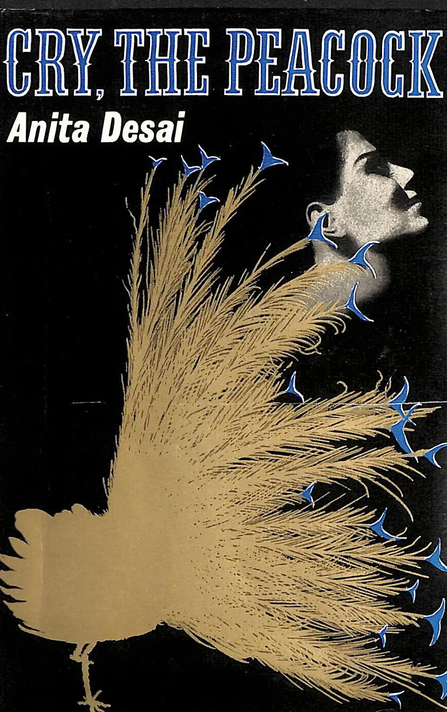
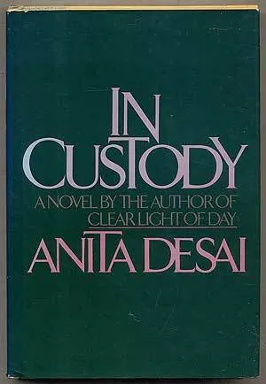

Anita Desai — “A Devoted Son”
Introduction of the Writer: Anita Desai
- born on June 24, 1937, in Uttarakhand, India.
- Real Name: Anita Mazumdar.
- A famous Indian novelist and short story writer.
- Was born to a German mother and an Indian father.
- Because of her mixed background, she grew up learning German, Hindi, and English.
- Completed her Bachelor of Arts from the University of Delhi.
- Began publishing stories and novels after finishing her education.
- Some of her well-known novels include Cry, The Peacock (1963), Fire on the Mountain (1977), and In Custody (1984).


Early Life and Writing Style
- grew up in a multilingual environment, learning German, Hindi, and English.
- This diverse background helped her develop a unique voice in literature.
- She was interested in writing from an early age (and started writing stories and poems as a child.)
- The common themes in her writings are struggle of women in the Indian society, family relationships and human psychology and emotions.
- Her early work was influenced by Indian culture and family life.
- She is known for her simple but powerful style of storytelling.
Context of the Story – A Devoted Son
- The story ‘A Devoted Son’ is taken from Anita desai’s collection ‘The Complete Short Stories’.
- set in a typical Indian middle-class family.
- focuses on the relationship between parents and children.
- The story shows how excessive love and duty can sometimes lead to conflict.
Setting & Characters
- The story takes place in India, likely in a small urban or semi-urban household.
- The time period of this story appears to be in the modern post independence era where values are shifting between tradition and modernity.
Rakesh – A dedicated and obedient son.
Varma – Rakesh’s father.
Veena – Rakesh’s wife.
Plot Explanation
- Exposition: Varma, an illiterate man, dreams of his son’s success. Rakesh excels, becomes a doctor.
- Rising Action: Rakesh honors his parents’ wishes, marries their choice, remains obedient.
- Climax: Rakesh controls his father’s diet strictly; Varma feels deprived.
- Falling Action: Relationship turns bitter; father resents Rakesh’s authority.
- Resolution: Varma dies discontented, showing irony of devotion turning oppressive.
Summary
- Story of Rakesh, a brilliant doctor and obedient son.
- Fulfills parents’ dreams, remains respectful.
- When father grows old, Rakesh’s strict medical care creates conflict.
- Devotion turns into control, father loses joy.
- Highlights complexity of love, duty, and generational conflict.
Themes
- Parent–Child Relationship: Love shifts into conflict with age.
- Devotion vs. Control: Care becomes overbearing and restrictive.
- Aging & Mortality: Old age; illness, loss of freedom, loneliness.
- Duty vs. Personal Freedom: Rakesh’s sense of responsibility conflicts with his father’s desire for joy and independence.
- Obsession → Rakesh’s excessive concern for health harms his father’s happiness.
Literary Devices
- Irony: The devoted son’s care causes his father’s unhappiness.
- Symbolism: Sweets and fried food represent small pleasures of life.
- Contrast: Shows the change from respect and obedience to strict control and tension.
- Foreshadowing: Early pride hints at later disappointment.
- Imagery: Vivid descriptions of emotions, food, and family life emphasize tension.
Connection with ‘The Oval Portrait’
- Love turning destructive: Devotion unintentionally causes harm.
- Sacrifice of happiness: Wife loses life; father loses simple joys.
- Irony: The title of both the stories.
- Obsession: Excessive focus (art or health) negatively affects loved ones.
Vocabulary
- wunderkind: a person who achieves great success when relatively young
- sweetmeat: a small piece of sweet food, made of or covered in sugar
- encomiums: a piece of writing that praises someone or something highly
- desolate: feeling or showing great unhappiness or loneliness
- delicacy: fine food item frugal (adj.): simple and plain and costing little
- gastroenteritis: a disease triggered by the infection and inflammation of the digestive system
- supplant: replace
- hypocritical: characterized by behavior that contradicts what one claims to believe or feel
- Ambassador: an automobile manufactured by Hindustan Motors of India, in production from 1958
- hubbub: a loud confusing noise
- prophet: a person regarded as an inspired teache